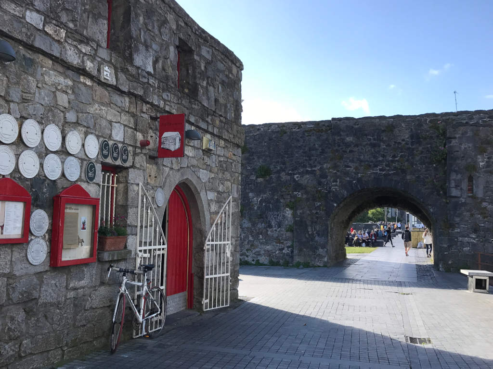
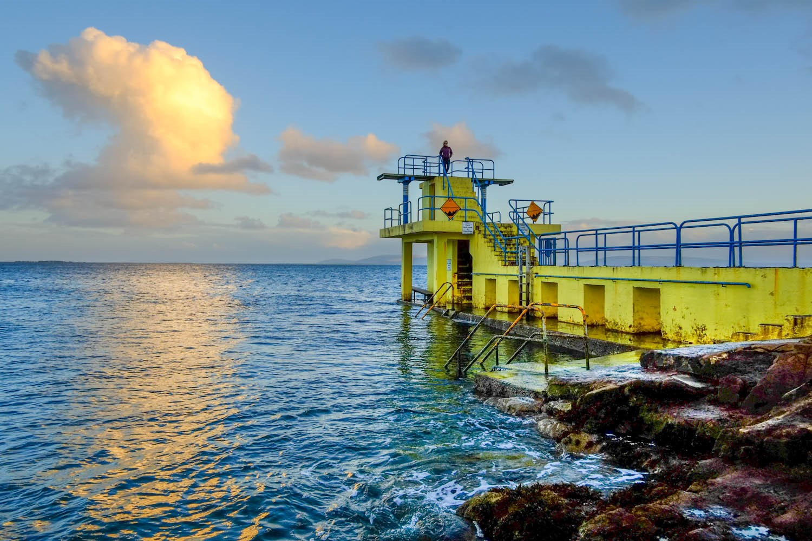

The Cathedral of Our Lady Assumed into Heaven and St Nicholas,
commonly known as Galway Cathedral, is a Roman Catholic cathedral in Galway,
Ireland, and one of the largest and most impressive buildings in the city.

Spainish Arch
The Spanish Arch is one of the last remaining pieces of Galway's historical city walls.
As a medieval city, one of the main characteristics of Galway is that it used to have a wall that kept invading armies out

Salthill
Salthill is a seaside area in the City of Galway in the west of Ireland.
Lying within the townland of Lenaboy, it attracts many tourists all year round.
There is a 2 km long promenade, locally known as the Prom, overlooking Galway Bay with bars, restaurants and hotels